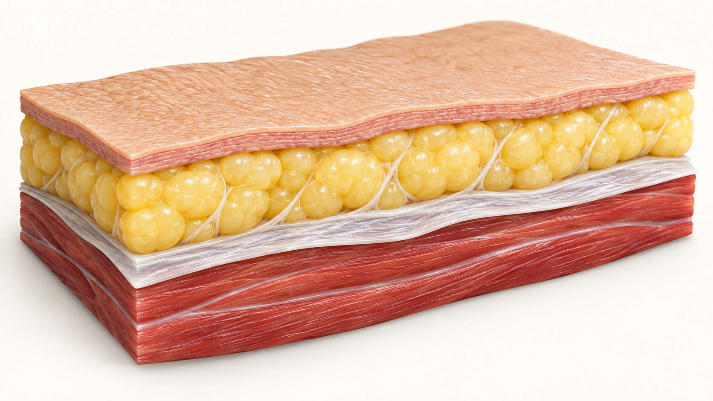
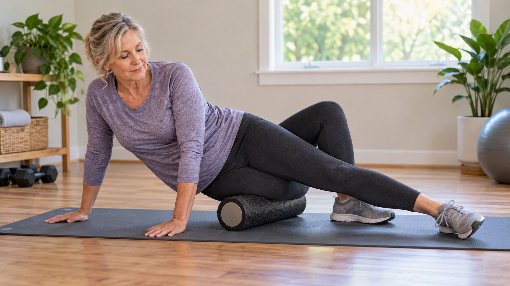
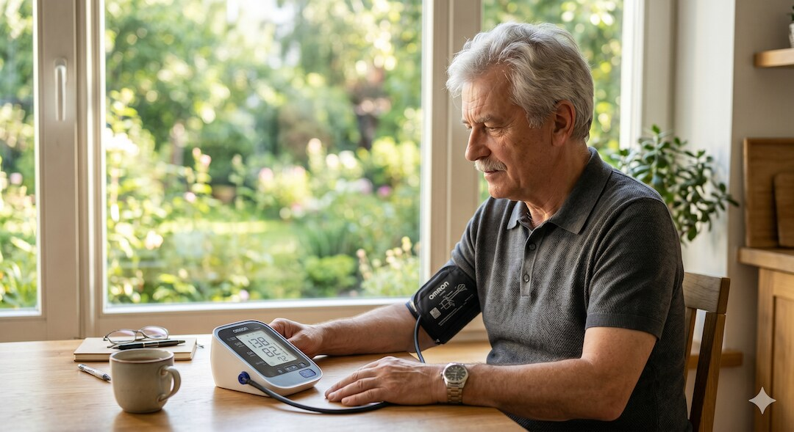

Reklamy w sieci obiecują, że wystarczy „odblokować powięź”, rozbić zrosty wałkiem albo wymasować brzuch, a tłuszcz sam zacznie schodzić. Brzmi to całkiem logicznie. Tylko fizjologia mówi co innego. Rozłóżmy to spokojnie.
Szybka odpowiedź
Jeśli rolujesz brzuch lub inne okolice, pamiętaj: terapia manualna może krótkotrwale zmniejszać ból albo poprawiać zakres ruchu, ale nie rozbija tłuszczu i nie odblokowuje jego spalania z brzucha. Wielkość obwodu zmieniają przede wszystkim całkowita ilość tkanki tłuszczowej, masa mięśniowa, wzdęcia i postawa. Nagłe powiększenie brzucha, ból lub wyczuwalny guz wymagają oceny medycznej.
Kluczowe wnioski
- Tłuszcz spala się systemowo, z całego ciała naraz, a nie z miejsca, które masujesz albo ćwiczysz.
- Meta-analizy nad „spot reduction” nie znalazły dowodów, że trening jednego miejsca usuwa stamtąd tłuszcz.
- Praca na powięzi (rolowanie, terapia manualna) realnie pomaga na ból i zakres ruchu, ale nie spala kalorii jak cardio.
- Oponka po 50-tce to głównie hormony, mniej mięśni i mniejsza aktywność, a nie zatkana folia.
Dlaczego ta obietnica brzmi tak wiarygodnie?
Obietnica odblokowania tłuszczu łączy prawdziwe istnienie powięzi z nieudowodnionym skutkiem masażu. Powięź jest tkanką łączną, a terapia manualna bywa badana w odniesieniu do bólu i ruchomości. Nie oznacza to, że mechaniczne uciskanie brzucha uwalnia magazyn tłuszczu i powoduje trwałe odchudzanie tej okolicy.
Odczucie rozluźnienia lub inny wygląd brzucha bezpośrednio po zabiegu nie potwierdza utraty tkanki tłuszczowej. Bez pomiarów nie należy przypisywać tego odprowadzaniu wody, rozbijaniu zrostów ani przyspieszeniu spalania tłuszczu.
Co to w ogóle jest powięź i jak działa?
Powięź to sieć tkanki łącznej, która owija mięśnie, nerwy i narządy w jeden ciągły system. Zbudowana jest głównie z kolagenu i elastyny, zanurzonych w uwodnionej substancji. Kiedy robi się sztywna, kleista albo „zgęstniała”, może znacząco ograniczać ruch i wywoływać ból.

Sąsiedztwo tkanki łącznej i tłuszczowej nie dowodzi, że powięź blokuje redukcję tłuszczu. Do takiego wniosku potrzebne byłoby badanie pokazujące trwałą zmianę tkanki tłuszczowej po zabiegu, a nie tylko zmianę bólu czy zakresu ruchu.
Co naprawdę mówi fizjologia spalania tłuszczu?
Tłuszcz to magazyn energii rozłożony po całym ciele. Kiedy w ciągu dnia wydatkujesz więcej energii, niż dostarczasz z jedzeniem, organizm sięga po te zapasy. Kluczowe: sięga po nie systemowo, z różnych miejsc naraz, a o kolejności decydują geny, hormony i płeć, a nie to, którą okolicę masujesz czy ćwiczysz. Zobacz nasz pełny artykuł o tym, jak pozbyć się oponki brzusznej .
Masaż nie wyciska komórek tłuszczowych jak płynu z gąbki. Ocena bólu lub ruchomości po terapii manualnej dotyczy innych wyników niż trwała utrata tłuszczu. Nie ma podstaw, by przedstawiać ją jako zamiennik postępowania żywieniowego i aktywności.
Co mówią twarde dowody?
Przegląd Ramireza-Campillo i współautorów, opublikowany w tomie Human Movement z 2022 roku, nie wykazał przewagi trenowanej kończyny nad nietrenowaną pod względem redukcji sąsiadującego tłuszczu. To wynik konkretnego zestawu badań nad ćwiczeniami. Nie badano w nim masażu powięzi ani obietnicy „odblokowania” brzucha.
Obraz nie jest całkowicie jednoznaczny: małe badanie Brobakkena i współautorów z 2023 roku, obejmujące 16 mężczyzn, wykazało większą redukcję tłuszczu tułowia po programie łączącym bieżnię i ćwiczenia brzucha niż po samej bieżni. Nie dotyczyło masażu ani kobiet po menopauzie. Nie uzasadnia więc reklamy zabiegu usuwającego „blokadę powięzi”.
Przegląd randomizowanych badań terapii mięśniowo-powięziowej z 2015 roku opisał zróżnicowaną jakość i wyniki prac. Nie uzasadnia gwarancji ulgi u każdego pacjenta. Dotyczył zastosowań terapeutycznych, nie potwierdzenia, że masaż odblokowuje spalanie tłuszczu z brzucha.
Gdzie jest granica prawdy?
Nie trzeba uznawać każdej terapii manualnej za bezwartościową, żeby odrzucić obietnicę odchudzania przez masaż. Przegląd terapii mięśniowo-powięziowej ocenia inne cele leczenia niż utrata tłuszczu. Jeśli chodzi o codzienny ruch, osobnym tematem są mobilność i rozciąganie; ich efektu również nie należy utożsamiać ze spalaniem tłuszczu w wybranym miejscu.

Terapia manualna może być rozważana w określonym problemie bólowym lub ograniczeniu ruchu. Jej wartość należy oceniać po takim celu, a nie po obietnicy utraty tłuszczu. Nie zastępuje aktywności ani oceny przyczyny dolegliwości.
Co naprawdę działa na oponkę po 50-tce?
Przegląd Khalafiego i współautorów z 2023 roku wskazuje, że ćwiczenia mogą poprawiać skład ciała kobiet po menopauzie. Wyniki dla treningu aerobowego były korzystniejsze w odniesieniu do tłuszczu, a dla oporowego — mięśni. To średnie wyniki grup, nie obietnica określonego spadku obwodu pasa u każdej osoby.
Badanie przekrojowe Abildgaard i współautorów opisało u kobiet w wieku 45–60 lat związek menopauzy ze zmianami tkanki tłuszczowej i jej rozmieszczenia. Taki projekt nie dowodzi, że każda kobieta musi przytyć, ani że masaż zmienia te procesy. To kolejny powód, aby oddzielać opis biologii od skuteczności konkretnego zabiegu.
W planie warto rozdzielić cele: trening oporowy służy między innymi mięśniom, a ruch aerobowy może wspierać zmniejszanie ilości tłuszczu. Znaczenie dla utrzymania mięśni ma także podaż białka omówiona w zaleceniach ESPEN. Samo zwiększenie białka nie gwarantuje redukcji brzucha.
Co realnie zmienia obraz, potwierdzone badaniami:
| Działanie | Wynik i jego granice |
|---|---|
| Trening oporowy | W metaanalizie badań kobiet po menopauzie sprzyjał poprawie wyników dotyczących mięśni. Nie gwarantuje miejscowej redukcji brzucha. |
| Trening aerobowy | W tej samej metaanalizie korzystnie wpływał na wyniki dotyczące tłuszczu. Wielkość zmiany zależy od osoby i programu. |
| Połączenie obu rodzajów ruchu | Może poprawiać skład ciała; nie oznacza, że każdy schemat jest odpowiedni dla każdej osoby. |
| Odpowiednia podaż białka | Zalecenia ESPEN odnoszą ją do utrzymania funkcji mięśni wraz z aktywnością. Nie jest sposobem na wybiórcze spalanie tłuszczu brzusznego. |
Kiedy oponka to sygnał, żeby pójść do lekarza?
Sam obwód brzucha to jeszcze nie diagnoza, ale jest kilka sytuacji, w których nie powinno się zgadywać w domu. Jeśli brzuch rośnie szybko bez zmiany diety i aktywności fizycznej, jest twardy, napięty lub boli, to nie jest temat na wałek, tylko na pilną wizytę lekarską.
Warto też sprawdzić zdrowie metaboliczne, bo tłuszcz trzewny jest aktywny zapalnie i wiąże się z insulinoopornością oraz ryzykiem sercowo-naczyniowym. Obwód w pasie, lipidogram, glukoza, ciśnienie, to konkrety, które powiedzą więcej niż wygląd. Jeśli masz wątpliwości albo objawy, odpuść internetowe teorie o powięzi i pogadaj z lekarzem.
Najczęściej zadawane pytania
Czy zablokowana powięź powoduje oponkę brzuszną?
Przywołane badania nie potwierdzają, że zablokowana powięź zatrzymuje tłuszcz na brzuchu. Samo istnienie powięzi i możliwy wpływ terapii na ruchomość nie dowodzą takiego mechanizmu.
Czy masaż albo rolowanie powięzi spala tłuszcz z brzucha?
Nie wykazano, że masaż lub rolowanie powodują trwałą redukcję tłuszczu brzusznego przez odblokowanie powięzi. Ewentualna zmiana bólu, czucia lub ruchomości jest innym wynikiem niż utrata tłuszczu.
Czy można spalić tłuszcz tylko z brzucha?
Nie można obiecać usunięcia tłuszczu wyłącznie z talii przez ćwiczenie brzucha lub masaż. Trzeba odróżnić krótkotrwałe lokalne procesy metaboliczne od trwałej, mierzalnej zmiany ilości tkanki tłuszczowej.
Co naprawdę zmniejsza oponkę po 50-tce?
Podstawą jest wykonalny plan jedzenia i aktywności, z uwzględnieniem stanu zdrowia. Trening pomaga poprawiać sprawność i skład ciała, ale nie obiecuje jednego tempa ani miejsca redukcji tłuszczu.
Czy praca na powięzi jest bezużyteczna?
Może pomagać w określonych dolegliwościach, lecz wyniki zależą od problemu i metody. Korzyści dotyczące bólu lub ruchomości nie czynią terapii manualnej samodzielną metodą odchudzania.
Obwód pasa, tłuszcz trzewny, kortyzol i nawyki wspierające metabolizm omawiamy szerzej w Centrum Metabolizmu i Brzucha po 50-tce.
Źródła
- Ramirez-Campillo i wsp. (2022). A proposed model to test the hypothesis of exercise-induced localized fat reduction (spot reduction), including a systematic review with meta-analysis.
- Brobakken i wsp. (2023). Abdominal aerobic endurance exercise reveals spot reduction exists: A randomized controlled trial.
- Ajimsha i wsp. (2015). Effectiveness of myofascial release: systematic review of randomized controlled trials.
- Khalafi i wsp. (2023). The effects of exercise training on body composition in postmenopausal women: a systematic review and meta-analysis.
- Deutz i wsp. (2014). Protein intake and exercise for optimal muscle function with aging: recommendations from the ESPEN Expert Group.
- Abildgaard i wsp. (2021). Changes in abdominal subcutaneous adipose tissue phenotype following menopause is associated with increased visceral fat mass.
Uwaga: Artykuł ma charakter informacyjny i edukacyjny. Nie zastępuje konsultacji lekarskiej, diagnozy ani leczenia.
Duża garść wiedzy podana prosto, konkretnie i po ludzku.
Jak poprawić sen po 50 i nie budzić się o 3 w nocy
Budzisz się o 3 w nocy po 50. roku życia? Sprawdź melatoninę, CBT-I, temperaturę sypialni, stres, kofeinę i objawy bezdechu sennego krok po kroku.
Czytaj artykuł ->
Nadciśnienie a elastyczność naczyń po 50
Nadciśnienie po 50. roku życia usztywnia tętnice. Sprawdź, jak ruch, dieta DASH, mniej soli, pomiary domowe i leczenie pomagają chronić naczynia.
Czytaj artykuł ->Ile białka po 50-tce? Zapotrzebowanie i odżywki WPC
Ile białka dziennie po 50. roku życia naprawdę potrzebujesz? Poznaj normy geriatryczne, najlepsze źródła naturalne oraz fakty i mity o odżywkach serwatkowych.
Czytaj artykuł ->